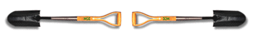

Technical Imaging Applications
A Virtual Learning Lab in the Social Sciences
Required Readings and Reference Resources
SBSC 395
Section 1A: 2 Hours
Fall 1996

Professor Ruben G. Mendoza, Ph.D
Archaeologist/Photographer
Required Readings
Collier, Jr., John, and Malcolm Collier
1986 Visual Anthropology: Photography as a Research Method.
Revised and Expanded Edition.
Albuquerque: University of New Mexico Press.
Nickell, Joe
1994 Camera Clues: A Handbook for Photographic Investigation.
Lexington: The University
Press of Kentucky.
* See Course Schedule for Additional
Required Readings and Web Resources on
Electronic Reserve.
Supplementary Reader
Hedgecoe, John
1995 The Photographer's Handbook. Third Edition. New York:
Alfred A. Knopf.
Readings in Archaeological Photography
Dorrell, Peter
1994 Photography in Archaeology and Conservation.. Second
Edition. Cambridge: Harvard University Press.
Howell, Carol L., and Warren Blanc
1995 A Practical Guide to Archaeological Photography. Second
Edition. Los Angeles: Institute of Archaeology, University of California.
Vogt, E.Z. (ed.)
1974 Aerial Photography in Anthropological Field Research.
Cambridge: Harvard University
Press.
Recommended Resources in Visual Communication
Banta, M., and C. M. Hinsley
1986 From Site to Sight: Anthropology, Photography, and the Powers
of Imagery. Cambridge:
Harvard University Press.
Grill, Tom, and Mark Scanlon
1990 Photographic Composition: Guidelines for Total Image Control
Through Effective Design.
New York: American Photographic Book Publishing.
Payne Hatcher, Evelyn
1974 Visual Metaphors: A Methodological Study in Visual Communication.
Albuquerque:
University of New Mexico Press.
Webmaster: Professor Ruben G. Mendoza, Ph.D. Web site originally
posted: August 26, 1996. All content authored and copyrighted by Professor
Ruben G. Mendoza. All citations should follow internet
bibliographic format noted here.